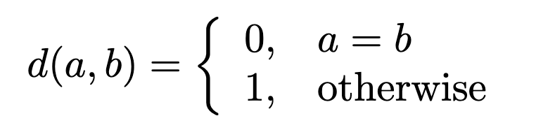

Afternoon Session¶
Functions¶
We are now going to introduce functions
- Functions in programming languages are similar to mathematical functions
- In principle, functions are used to avoid repetitions of the same code
- Functions are code fragments, which can be take one or more arguments and can have a return value
- They have a name, a list of arguments and a code block, which does the actual
work and are defined by the
defkeyword
Similarity of Sequence
Let us write a function that calculates some measure of similarity between two strings e.g. a DNA sequences such as
where the element-wise distance function is given by:

and we want to calculate the sum over sequences \(A\) and \(B\) of same length \(N\).
such that
Yielding a total distance of 4. Let's write Python function that solves this problem
def sequence_distance(A, B):
# Store current distance
distance = 0
# Loop over index of A and B
for i in range(len(A)):
if A[i] != B[i]:
distance += 1
return distance
A = "GATCGTTCG"
B = "CATGGTTGA"
sequence_distance(A, B)
Can we improve the function?
Tip
We require that the sequences are of equal length. We could easily
verify this by using an assert statement
Tip
Remeber that the range(len(seq)) is not considered idiomatic Python?
The way to solve this when having to access elements from two iterables
is using the zip function. Refactoring we get
Mutability and function returns¶
By convention, a Python function either mutates the input arguments or returns something, but not both. It is also possible that function does nothing of the aforementioned. Let's see an example using a list which is a mutable object
Modules¶
- A program can be divided into smaller, better manageable units, so called
modules (files ending with
.py) - Improves reusability of code: when someone wrote something useful, someone else can use the same code in his program
- A program can consist of several modules where each module can contain several coherent functions (and classes)
Let's look at an example by creating a simple math module. Let's structure the
code in a new directory called mathlib. First create a new directory and cd
into it
Next start by creating a module called math_funcs.py
Next we will create a new module that call the functions we defined in
math_funcs.py and performs some calculations - let's call it calculate.py
import math_funcs as mf
a = 3
b = 1
print(f"{a} + {b} = {mf.add(a, b)}")
print(f"{a} - {b} = {mf.sub(a, b)}")
print(f"{a} * {b} = {mf.mul(a, b)}")
Imports and namespaces
Notice that the import statement makes the functions of math_funcs.py
accessible from calculate.py. In this case we attached math_funcs the
namespace mf for short. To access the functions we need to use the dot
notation. An alternative could have been to
We could also have skipped the aliasing
A big no no is using wildcard imports from module import *. This will
clutter the namespace!
Takeaways
- Modules and functions help you organize and write good quality code
- Modules can be distributed as packages - extending the functionality of Python. The ecosystem of packages is one of the reasons that make Python great.
Command line arguments and IO¶
You already know what a command-line interface (CLI) program is!
Where mkdir is the command and dir_name is the input argument. What if we
want to design such a program in Python? Let's continue working on our
"Similarity of Sequence" example. The goal when we are done will be to
Read text files containing DNA sequences, passed as arguments to a program called
read_seq.py
Let's ignore the reading of text files for now. First create a new directory
called dna_lib and cd into it
For the purpose of practicing working with modules let's separate our program
into separate modules. First create a module called dna_metrics.py
def sequence_distance(A, B):
# Assert equal length
assert len(A) == len(B), "Must be of equal length"
# Store current distance
distance = 0
# Loop over index of A and B
for a, b in zip(A, B)
if a != b:
distance += 1
return distance
Then create read_seq.py
import dna_metrics as dm
import sys
# Read command line args
A = sys.argv[1]
B = sys.argv[2]
print(f"Distance between A and B is {dm.sequence_distance(A,B)}")
if __name__ == "__main__"" convention
By convention we usually wrap the code that "runs" our program in an if
statement for executable programs. This is to ensure that program is not
executed if imported by another module but only when called directly. The
code would then look like this
import dna_metrics as dm
import sys
if __name__ == "__main__":
# Read command line args
A = sys.argv[1]
B = sys.argv[2]
print(f"Distance between A and B is {dm.sequence_distance(A,B)}")
The condition __name__ == "__main__" is only satisfied for the entry
point module.
Adding some Input-Output (IO) functionality¶
We are now going to add some IO functionality. Rather than passing the
sequences directly as arguments we are going to use the builtin open function
to read files and instead of printing the results to the standard output we
will dump the results into a text file. First let's create a new directory
data that will contain seq1.txt and seq2.txt
Let's explore the open command from ipython using seq1.txt
[ins] In [1]: inputfile = open("seq1.txt", "r")
[ins] In [2]: inputfile
Out[2]: <_io.TextIOWrapper name='seq1.txt' mode='r' encoding='UTF-8'>
[ins] In [3]: A = inputfile.readline()
[ins] In [4]: A
Out[4]: 'GATCGTTCG\n'
[ins] In [5]: A.strip()
Out[5]: 'GATCGTTCG'
Adapting our program accordingly using the keyword with to define a context
in which the file is open.
import dna_metrics as dm
import sys
if __name__ == "__main__":
# Read command line args
with open(sys.argv[1], "r") as f:
A = f.readline().strip()
with open(sys.argv[2], "r") as f:
B = f.readline().strip()
print(f"Distance between A and B is {dm.sequence_distance(A,B)}")
Now run the script
As a final step we will save the results into an output file
import dna_metrics as dm
import sys
if __name__ == "__main__":
# Read command line args
with open(sys.argv[1], "r") as f:
A = f.readline().strip()
with open(sys.argv[2], "r") as f:
B = f.readline().strip()
with open(sys.argv[3], "w") as f:
f.write(f"Distance between A and B is {dm.sequence_distance(A,B)}")
Let's run the script a final time
Objects Oriented Python (Bonus if there is time)¶
Classes provide a means of bundling data and functionality together. Creating a new class creates a new type of object, allowing new instances of that type to be made. Each class instance can have attributes attached to it for maintaining its state. Class instances can also have methods (defined by its class) for modifying its state. ref